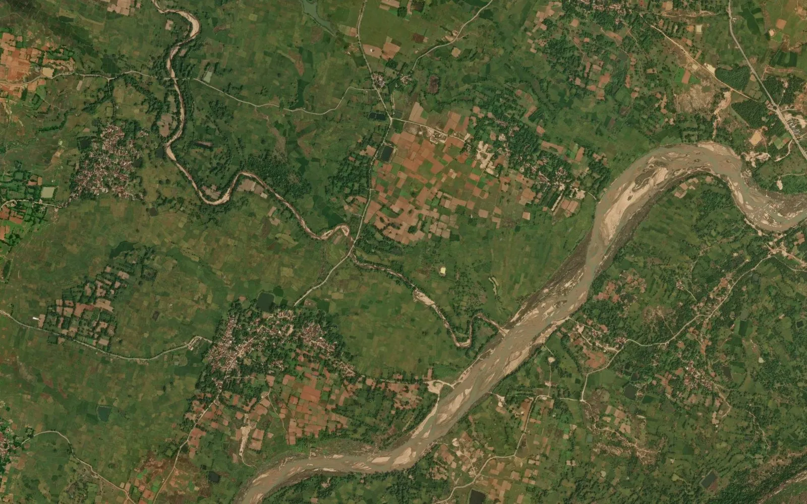

Jharkhand Bhunaksha (JharBhuNaksha): see the plot map and get it as KML, DWG or SHP

Jharkhand Bhunaksha (JharBhuNaksha, झारखंड भू नक्शा) is the state portal for digitized plot maps. You choose a mauza and see its plots. It is free and useful for a quick look. This guide explains how to open it, where it stops, and how to get the village as a file for satellite imagery.
1. How to open Jharkhand Bhunaksha
- Open jharbhunaksha.jharkhand.gov.in.
- Choose the district, circle, halka and mauza (village).
- The cadastral map loads. Click a plot or enter the plot (khesra) number to highlight it and see its details.
The khatiyan and Register II (the record of rights) are on the companion portal JharBhoomi (jharbhoomi.jharkhand.gov.in). Use the two together: the map shows the plot, JharBhoomi shows the khata, holder and land entry. Read how to read khesra, khata and khatiyan on a Jharkhand village map.
2. What the portal does not give you
- It is a viewer for one mauza at a time. A project crossing many mauzas needs them joined in one file.
- There is no georeferenced KML, DWG or SHP download for a whole project area.
- The record map does not sit exactly on satellite imagery.
- Land type and any restriction on transfer have to be read from the records and checked with the circle office. Tribal land rules in Jharkhand make this check important.
3. From Jharkhand Bhunaksha to a satellite map
The mauza map is digitized and georeferenced so that each plot becomes a closed polygon with its number, fitted to WGS 84 / UTM coordinates and checked against field edges, roads, nalas and ponds on the imagery. The file opens in Google Earth, QGIS or AutoCAD. See how to find a plot number on a satellite map.
4. Search terms that mean the same thing
Jharkhand Bhunaksha, JharBhuNaksha, Jharkhand bhu naksha, Jharkhand land map, Jharkhand plot map and Jharkhand village map with khesra numbers all mean the village cadastral map. The usable form for a project is a georeferenced file.
5. Typical uses
Teams working on solar, wind, mining-linked, road and transmission projects use the file to list plots inside a boundary, mark government land and plan blocks. The overlay is a planning base, not proof of title. Confirm status with the circle office and survey the ground where a boundary decides ownership or compensation.
Frequently asked questions
Is Jharkhand Bhunaksha free?
Yes. The map viewer on the official portal can be used free of charge.
Can I download a KML or shapefile from JharBhuNaksha?
The portal is a viewer. A georeferenced KML, DWG or SHP has to be made by digitizing and georeferencing the mauza map.
Where do I see the khatiyan in Jharkhand?
On JharBhoomi, jharbhoomi.jharkhand.gov.in.
झारखंड भू नक्शा: सार
झारखंड भू नक्शा पोर्टल पर जिला, अंचल, हल्का और मौजा चुनकर प्लॉट का नक्शा देखा जा सकता है। मौजा का जियो-रेफरेंस्ड नक्शा सैटेलाइट इमेज पर KML, DWG और SHP फाइल में चाहिए तो हमें गांव की सूची भेजें।
More: Jharkhand khasra maps, land record and revenue websites of every state, bhu naksha satellite map, check your village with the village checker, or ask for a quotation. BHU-NETRA Map Service is a private service and is not connected with any state government.
Need the village map as KML, DWG or SHP?
Georeferenced and digitized khasra maps in KML, DWG, SHP and Excel for 20 states, plus DGPS, Total Station, topographic and drone surveys. Single village orders welcome.